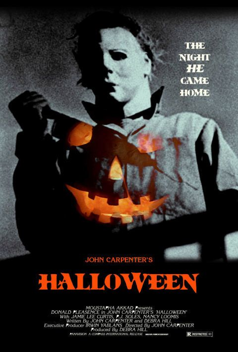

|  | Halloween - A Noite do Terror
Direção: John Carpenter
Roteiro John Carpenter, Debra Hill
Elenco: Jamie Lee Curtis, Donald Pleasence, Nancy Kyes
Michael Myers (Tony Moran) é um psicopata que vive em uma instituição há 15 anos, desde quando matou sua própria irmã. Porém, ele consegue fugir de seu cativeiro e retorna à sua cidade natal para continuar seus crimes na localidade que, aterrorizada, ainda se lembra dele. |
|
Acesse mais em YouTube SESSÕES
|